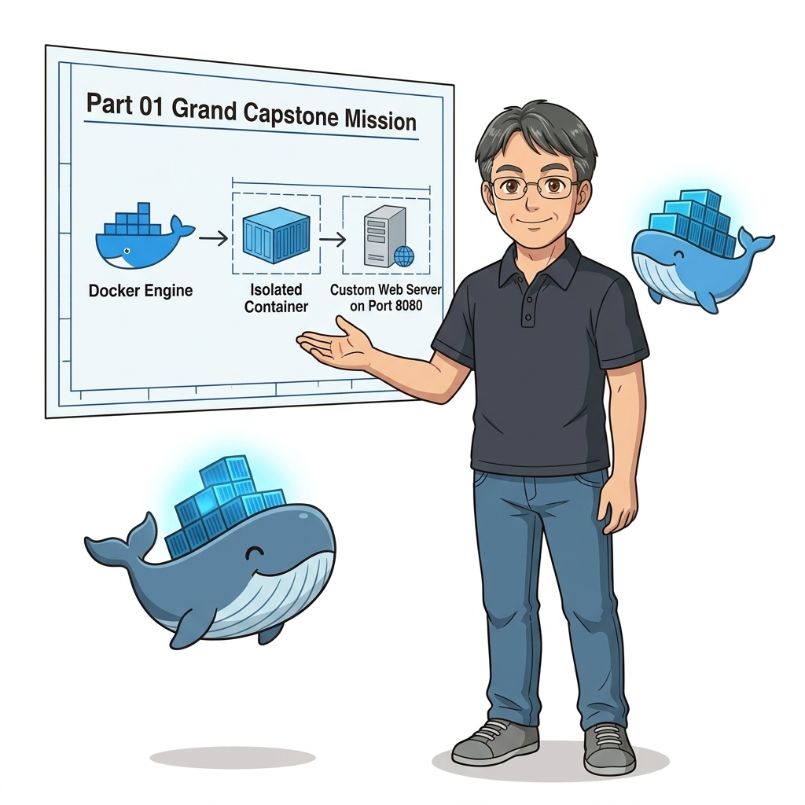
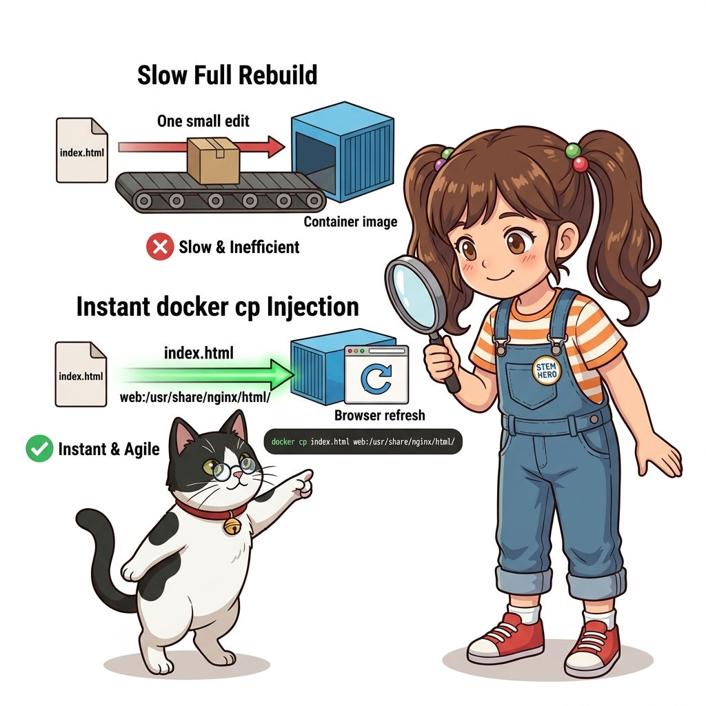
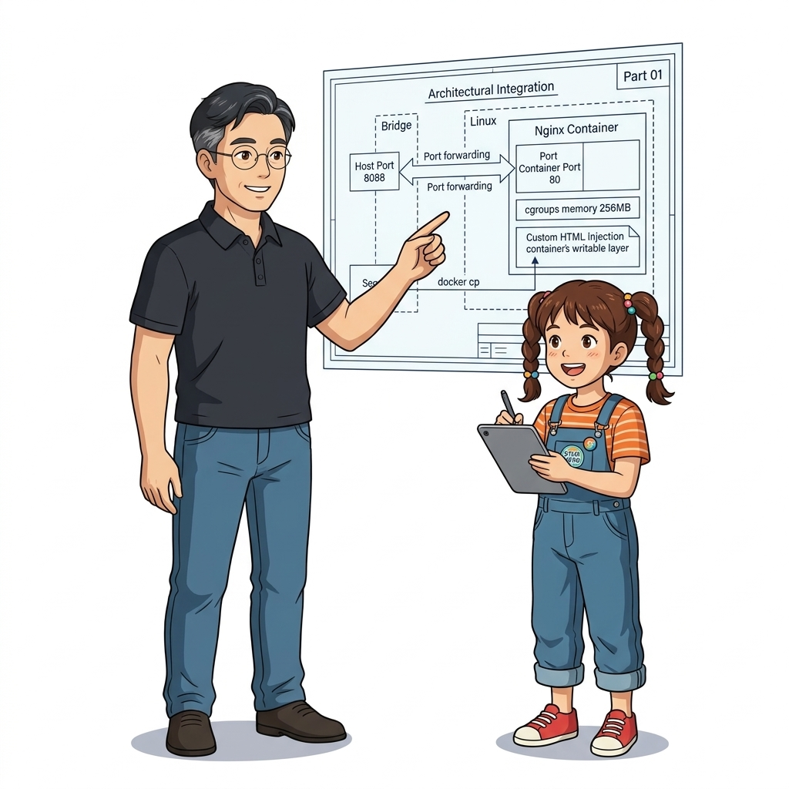
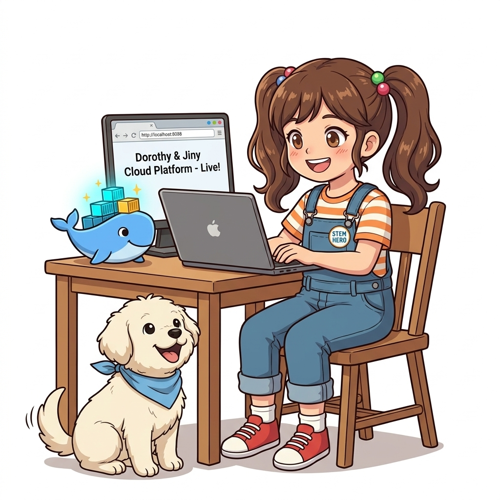
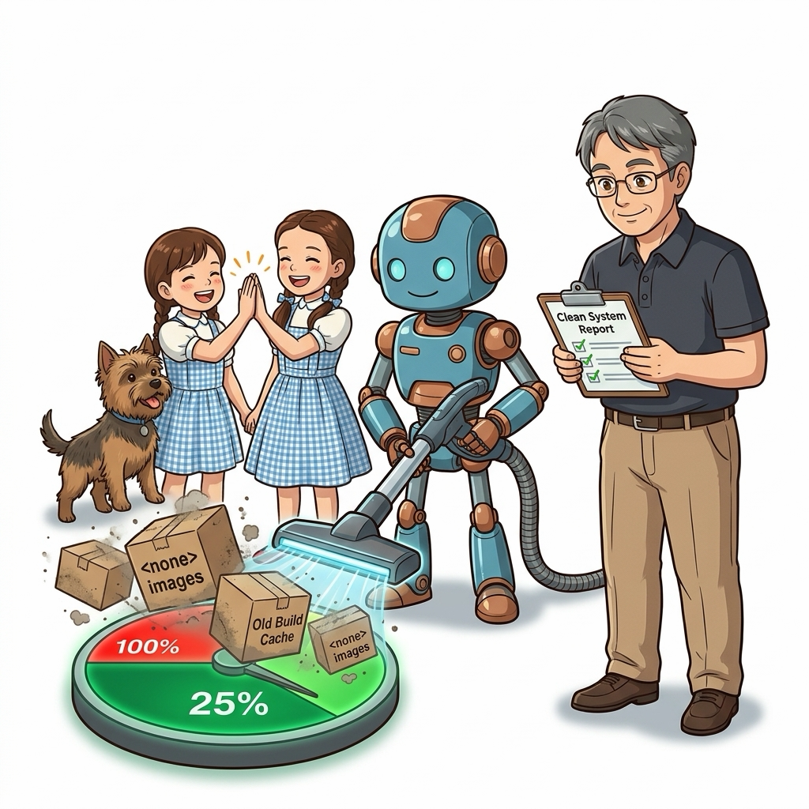

014. Part 01 실전 미션: 컨테이너 파일시스템 탐색과 커스텀 웹 서버
축하합니다! 여러분은 000강의 클라우드 네이티브 대항해 오리엔테이션을 시작으로, 환경 불일치의 고통, 마이크로서비스와 데브옵스의 필요성, OS별 실습 환경 튜닝, Hello World의 5단계 내부 메커니즘, 가상머신 대비 커널 공유의 물리적 원리, 대화형(-it)과 백그라운드(-d) 실행 모드, 컨테이너 5대 생애주기, 무중단 진단(exec)과 파일 복사(cp), 도커 엔진 4계층 아키텍처, 그리고 리눅스 커널의 양대 기둥인 네임스페이스와 cgroups까지 Part 01의 방대한 14개 핵심 원리를 완벽하게 정복하셨습니다.

그림 01-15-1 Part 01의 모든 도커 엔진 기본기와 커널 지식을 총결집하는 종합 캡스톤 실전 미션이번 014강은 단순한 이론 강의가 아니라, 지금까지 배운 모든 지식을 종합하여 현실의 엔지니어링 문제를 스스로 해결하는 Part 01 종합 캡스톤 실전 챌린지입니다!
014.1 실전 미션 브리핑: 도로시 연구소의 레거시 웹 홍보관 구축
이호진 교수님과 도로시 연구팀에게 긴급한 의뢰가 도착했습니다:
- 상황: 연구소의 레거시 홍보 웹사이트가 호스트 서버의 낡은 환경에 의존하고 있어 보안 취약점과 라이브러리 충돌을 겪고 있습니다.
- 임무:
- 호스트 시스템을 일절 오염시키지 않는 가볍고 안전한 Nginx 기반의 격리 컨테이너를 가동할 것.
- 메모리 누수를 방지하기 위해 cgroups로 최대 128MB의 엄격한 램 제한을 걸 것.
- 백그라운드 데몬 모드(
-d)로 상시 구동하고, 호스트의 8088 포트로 웹 서비스를 포워딩할 것. - 컨테이너 내부로 직접 들어가 파일시스템 구조를 탐색하고, 호스트에서 제작한 인터랙티브 HTML 대시보드를
docker cp로 주입하여 배포를 완료할 것. - 최종적으로
curl및 브라우저 검증을 마치고, 컨테이너의 실시간 자원 상태를 모니터링한 뒤 안전하게 아카이빙할 것.

그림 01-15-2 메모리 제한(cgroups), 포트 포워딩, 백그라운드 데몬, 파일 주입(docker cp)이 결합된 종합 캡스톤 아키텍처014.2 4단계 종합 실전 챌린지 수행 절차
터미널을 열고 다음 4단계 명령어를 직접 입력하며 실전 엔지니어링 미션을 완수해 봅시다:
1단계: 엄격한 자원 제한과 포트 포워딩을 적용한 백그라운드 웹 서버 기동
# [1단계 실행] 메모리 128MB 제한, CPU 0.5 할당, 8088 포트 매핑으로 Nginx 컨테이너 기동
docker container run -d --name dorothy-portal -p 8088:80 -m 128m --cpus="0.5" nginx:alpine
2단계: 컨테이너 내부 파일시스템 탐색 및 프로세스 격리 검증
# [2단계 실행] 컨테이너 내부의 Nginx 웹 루트 경로와 프로세스 확인
docker container exec dorothy-portal ls -la /usr/share/nginx/html
docker container exec dorothy-portal ps aux
3단계: 커스텀 홍보관 웹 페이지 제작 및 실시간 주입 (Hotpatch Deployment)
# [3단계 실행] 호스트 터미널에서 반응형 인터랙티브 HTML 에셋 생성
cat << 'HTML' > /tmp/dorothy_portal.html
<!DOCTYPE html>
<html lang="ko">
<head>
<meta charset="UTF-8">
<title>Dorothy STEM Cloud Native Lab</title>
<style>
body { font-family: -apple-system, sans-serif; background: #0f172a; color: #f8fafc; text-align: center; padding: 50px; }
.card { background: #1e293b; border-radius: 16px; padding: 40px; max-width: 600px; margin: 0 auto; box-shadow: 0 10px 25px rgba(0,0,0,0.5); }
h1 { color: #38bdf8; }
.badge { background: #0284c7; padding: 6px 14px; border-radius: 20px; font-weight: bold; font-size: 14px; }
</style>
</head>
<body>
<div class="card">
<h1>🐳 도로시 클라우드 네이티브 연구소</h1>
<p class="badge">Part 01 마스터 캡스톤 성공</p>
<p>이 웹 서비스는 리눅스 커널 격리 공간(cgroups 128MB 제한) 위에서 안전하게 가동 중입니다.</p>
<p>멘토: 이호진 교수님 | 수석 조교: 지니 | 마스코트: 토토 | 연구원: 도로시</p>
</div>
</body>
</html>
HTML
# docker cp 명령어로 컨테이너 내부 index.html 교체
docker container cp /tmp/dorothy_portal.html dorothy-portal:/usr/share/nginx/html/index.html
4단계: 엔드투엔드 서비스 검증 및 실시간 리소스 감시
# [4단계 실행] HTTP 응답 헤더 및 본문 검증
curl -I http://localhost:8088
curl http://localhost:8088 | grep "도로시 클라우드 네이티브"
# 실시간 컨테이너 리소스 점유율 확인 (메모리 128MB 한도 확인)
docker stats --no-stream dorothy-portal

그림 01-15-3 curl 호출을 통해 커스텀 HTML이 200 OK로 서빙되고 128MB 메모리 상한선이 정확히 유지됨을 검증📊 Part 01 15개 핵심 역량 마스터 체크리스트
| 대단원 핵심 주제 | 체크포인트 | 달성 여부 및 숙련도 |
|---|---|---|
| 000~002강 | 클라우드 네이티브 패러다임, 환경 불일치 해결, 마이크로서비스 및 데브옵스 CI/CD | ✅ 마스터 (이론 체계 완비) |
| 003~004강 | Windows WSL2, macOS VirtioFS, Ubuntu Server 공식 저장소 설치 및 권한 | ✅ 마스터 (크로스 플랫폼 구축) |
| 005~007강 | Hello-World 5단계 실행 흐름, 격리와 밀집, 게스트 OS 없는 커널 공유 메커니즘 | ✅ 마스터 (커널 물리 원리 체화) |
| 008~009강 | 대화형(-it) 세션, 백그라운드 데몬(-d), 네트워크 포트 포워딩(-p host:cnt) | ✅ 마스터 (네트워크 관문 제어) |
| 010~011강 | 5대 상태 전이, SIGTERM 우아한 종료, docker exec 실시간 침투 및 docker cp 파일 전송 | ✅ 마스터 (프로덕션 트러블슈팅) |
| 012~013강 | 4계층 엔진(CLI/dockerd/containerd/runc), 6대 네임스페이스 및 cgroups v2 자원 통제 | ✅ 마스터 (로우레벨 커널 제어) |
| 014강 | 모든 기술이 결합된 종합 웹 포털 캡스톤 미션 완수 | 🏆 Part 01 최종 마스터 달성! |
014.3 선언적 실습 및 아키텍처 다이어그램
# [실습 014-정리] 캡스톤 미션 완수 후 안전한 자원 회수
docker container stop dorothy-portal
docker container rm dorothy-portal
rm -f /tmp/dorothy_portal.html
echo "🎉 Part 01 Capstone Mission Successfully Completed!"
🔍 캡스톤 엔드투엔드 서비스 아키텍처 (Mermaid Diagram)
flowchart TD
User["🌐 사용자 브라우저 (http://localhost:8088)"] --> Port["🖥️ Host Port 8088"]
subgraph HostSystem["Docker Host Machine (Linux Kernel)"]
Port --> DockerProxy["⚡ Docker Proxy / NAT"]
DockerProxy --> CgroupZone["🛡️ cgroups 격리 존 (Memory: 128MB, CPU: 0.5)"]
subgraph CgroupZone
Nginx["🐳 dorothy-portal (Nginx Alpine)"]
Html["📄 /usr/share/nginx/html/index.html (docker cp 주입)"]
Nginx --- Html
end
end
Nginx -->|200 OK 렌더링| User

그림 01-15-4 호스트 브라우저에서 아름다운 도로시 연구소 웹 홍보관이 완벽히 렌더링된 최종 성공 화면014.B 📚 도커 바이블 심화: 트러블슈팅: 디스크 고갈(no space left on device)과 Overlay2 빌드 캐시 정밀 소탕
출처 도서: 『트러블 슈팅 도커』 핵심 분석
운영 서버의 모니터링 경보가 울리고 모든 배포가 중단되는 원인 1위는 /var/lib/docker/overlay2 디렉터리가 디스크를 100% 잠식하는 디스크 풀(Disk Full) 현상입니다.
디스크 고갈을 유발하는 4대 주범과 해결책:
- Dangling (댕글링) 이미지:
- 소스코드가 수정되어 새 이미지를 빌드하면, 이전 이미지는 이름 없는
<none>:<none>태그로 디스크에 버려집니다. (docker image prune으로 청소)
- 소스코드가 수정되어 새 이미지를 빌드하면, 이전 이미지는 이름 없는
- BuildKit 빌드 캐시 누적:
- 도커 빌드가 거듭될수록 수십 GB의 중간 빌드 캐시가 디스크에 축적됩니다. (
docker builder prune으로 청소)
- 도커 빌드가 거듭될수록 수십 GB의 중간 빌드 캐시가 디스크에 축적됩니다. (
- 정지된 컨테이너의 Read-Write 레이어:
- 종료된 컨테이너도 삭제하지 않으면 upperdir의 임시 파일들이 디스크를 영구 점유합니다.
- 고아 익명 볼륨 (Orphaned Anonymous Volumes):
- 컨테이너를 삭제할 때
-v플래그를 누락하면 익명 볼륨이 영원히 삭제되지 않고 남습니다. (docker volume prune으로 청소)
- 컨테이너를 삭제할 때

그림 014-B-1 도커 디스크를 가득 채운 불필요한 빌드 캐시와 댕글링 이미지를 말끔히 청소하는 워크플로# [실습] 도커 디스크 점유 상태 정밀 분석 및 단계별 안전 청소
# 1. 도커 컴포넌트별 디스크 점유 현황 한눈에 확인
docker system df
# 2. 상세 내역(회수 가능한 공간 계산) 확인
docker system df -v
# 3. [안전 청소] 정지된 컨테이너, 이름 없는 댕글링 이미지, 미사용 네트워크 일괄 정리
docker system prune -f
# 4. [심층 청소] BuildKit 빌드 캐시까지 완전 정리
docker builder prune -a -f
# 5. [경고: 주의 요망] 미사용 볼륨까지 완전 소탕 (DB 데이터 유실 주의!)
# docker volume prune -f
👨🏫 이호진 교수님의 바이블 멘토링 노트: “새벽에 서버가 멈췄다는 연락을 받고 들어가 보면 99%는 overlay2 디스크 고갈입니다. 주기적인 크론탭(Cron)이나 CI 파이프라인 후처리 단계에
docker image prune -f를 걸어두는 것은 백엔드 엔지니어의 기본 덕목입니다.”👧 도로시의 깨달음: “새 옷을 사 올 때마다 헌 옷을 버리지 않고 방에 계속 쌓아두다가 문도 못 열게 된 꼴이었군요! 정기 청소가 꼭 필요해요!”
🐱 조교 지니의 아키텍처 체크포인트: “하지만
docker system prune --volumes는 명명된 볼륨까지 날려버릴 수 있으므로 실무 운영 환경에서는 절대로--volumes옵션을 함부로 붙이면 안 됩니다!”
014.4 핵심 정리: 캐릭터 대화와 3대 교훈
👧 도로시: “교수님! 지니! 토토! 우리가 첫날에는 컨테이너가 뭔지도 잘 몰랐는데, 이제는 메모리 제한도 걸고, 포트도 뚫고, 파일도 실시간으로 갈아 끼우며 완벽한 웹 서비스를 띄워냈어요! 정말 뿌듯해요!”
🐱 조교 지니: “야옹~ 축하합니다! 단순히 명령어를 외운 게 아니라, 커널 네임스페이스와 cgroups, OCI 4계층 아키텍처라는 탄탄한 기초가 뒷받침되었기에 이런 완벽한 실무 캡스톤이 가능했던 것이랍니다!”
🐶 토토: “멍멍! Part 01 마스터 배지를 가슴에 다니 기분이 너무 좋아요! 이제 다음 모험도 무조건 출격이에요!”
👨🏫 이호진 교수님: “모두 정말 자랑스럽구나! 여러분은 이제 전 세계 어디에 내놓아도 손색없는 도커 엔지니어의 강력한 기본기를 갖추었단다. 이 탄탄한 기초 위에 다음 파트의 ‘Dockerfile 이미지 빌드’라는 날개를 달아보자!”
그림 01-15-5 Part 01 완주와 캡스톤 성공을 축하하는 도로시 연구팀의 3대 최종 교훈
- 기초 엔지니어링의 완벽한 통합:
- 네임스페이스 격리, cgroups 자원 상한선, 포트 포워딩, 파일시스템 주입이 하나의 실전 서비스로 유기적으로 결합됨을 증명했습니다.
- 프로덕션 수준의 자원 안전성 확보:
- 무제한 자원 소모를 방어하고 메모리와 CPU 한도를 명시적으로 통제하는 인프라 설계 습관을 정착시켰습니다.
- 다음 단계(Part 02)로의 도약 발판:
- 이미 만들어진 이미지를 실행하는 단계를 넘어, 이제 우리만의 독창적인 소프트웨어를 코드로 빌드하는 Dockerfile의 세계로 전진합니다.
014.5 랩노트 피날레와 Part 02 예고
그림 01-15-6 Part 01 마스터 수료증을 들고 Part 02 Dockerfile 이미지 빌드 대항해를 향해 출항하는 연구팀
💡 다음 대단원 예고 (Part 02): 015. 도커 허브 이미지 활용과 런타임 환경 변수 주입부터 시작되는 Part 02. 도커 이미지 빌드와 멀티 스테이지, 레지스트리에서는 남이 만들어 둔 이미지를 단순히 가져다 쓰는 것을 넘어,
Dockerfile을 직접 작성하여 나만의 소프트웨어를 불변 이미지로 빌드하고, 수 기가바이트의 무거운 이미지를 수십 메가바이트로 압축하는 ‘멀티 스테이지 빌드 혁명’의 세계로 진격합니다!
🧭 강의 네비게이션
- ◀️ 이전 강의: 013_리눅스커널_격리기술_네임스페이스와_cgroups
- 📋 Part 01. 컨테이너 혁명과 도커 엔진 기본기 마스터 (000 ~ 014) 목차로 돌아가기
- ▶️ 다음 대단원: Part 02. 도커 이미지 빌드와 멀티 스테이지, 레지스트리